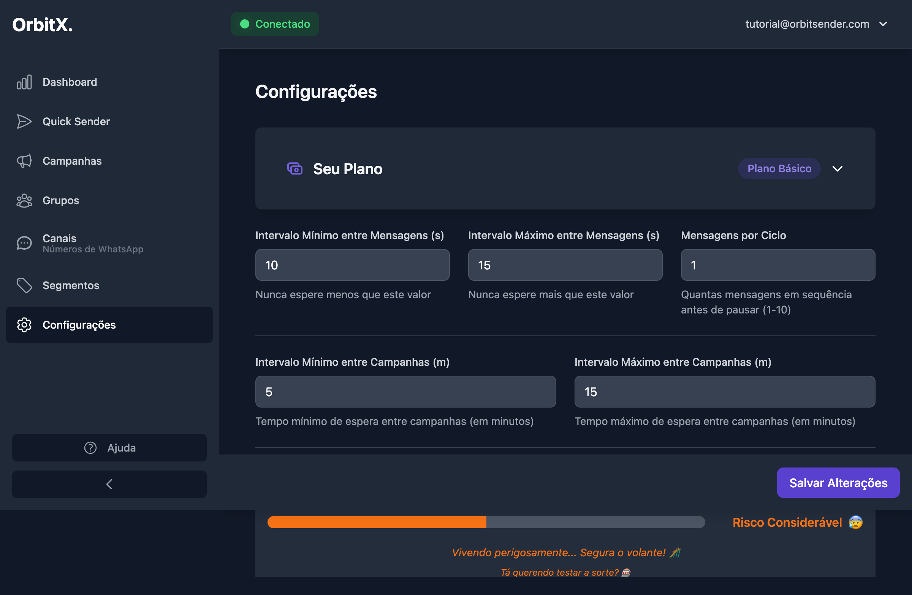
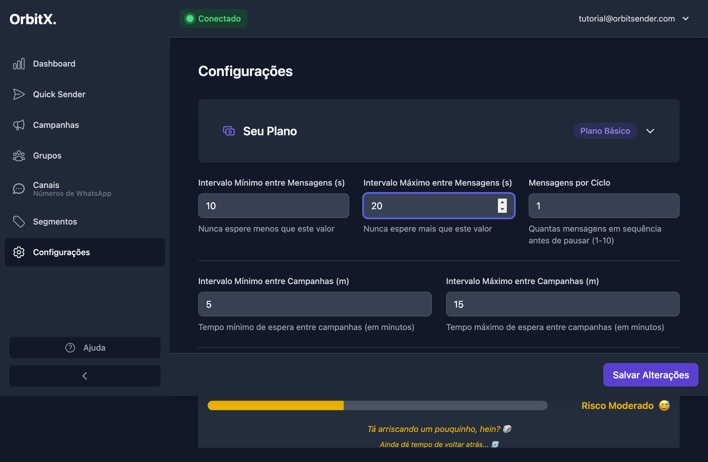
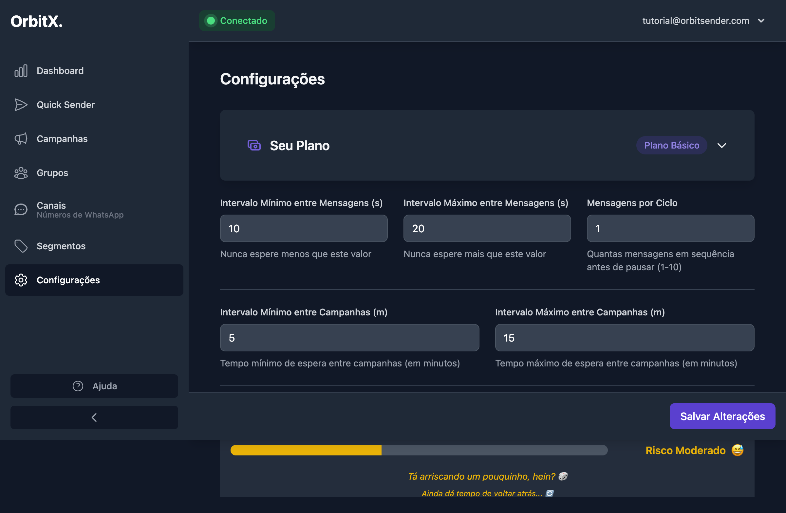

⚙️ Configurações de Taxas de Disparo
Tutorial completo passo a passo para configurar os intervalos de disparo e garantir entregas seguras
📚 Páginas Relacionadas
Por que configurar as taxas de disparo?
As configurações de disparo são fundamentais para o funcionamento seguro e eficiente do sistema. Elas controlam:
- Prevenir banimentos: Intervalos adequados evitam detecção pelo WhatsApp como comportamento automatizado
- Controlar velocidade: Determina quão rápido suas mensagens são enviadas
- Organizar campanhas: Define o tempo entre uma campanha e outra
- Manter segurança: Configurações conservadoras reduzem riscos de bloqueio
Quanto menor o tempo entre mensagens, maior o risco de detecção e banimento pelo WhatsApp. Sempre comece com configurações conservadoras e ajuste gradualmente conforme necessário e conforme você ganha experiência com o sistema.
Passo 1: Acessar a Página de Configurações
Para configurar as taxas de disparo, siga estes passos:
1.1 Navegar até Configurações
- No menu lateral esquerdo, localize a opção "Configurações" e clique nela
- Ou acesse diretamente em:
https://app.orbitsender.com/settings - Você será direcionado para a página de configurações

1.2 O que você verá na página
A página de configurações é dividida em seções:
- Seu Plano: Informação sobre o plano atual (ex: "Plano Básico")
- Configurações de Mensagens: Intervalos entre mensagens individuais
- Configurações de Campanhas: Intervalos entre campanhas
- Indicador de Risco: Mostra o nível de risco baseado nas configurações
- Botão Salvar: Para salvar as alterações feitas
Passo 2: Entender as Configurações de Mensagens
A primeira seção controla o intervalo entre cada mensagem enviada:
2.1 Intervalo Mínimo entre Mensagens (s)
- O que é: O tempo mínimo de espera (em segundos) entre enviar uma mensagem para um grupo e enviar para o próximo
- Valor recomendado: 10 segundos (mínimo seguro)
- Como funciona: O sistema nunca esperará menos que este valor
Se você configurar o intervalo mínimo como 10 segundos, o sistema sempre aguardará pelo menos 10 segundos antes de enviar a próxima mensagem.
2.2 Intervalo Máximo entre Mensagens (s)
- O que é: O tempo máximo de espera (em segundos) entre enviar uma mensagem para um grupo e enviar para o próximo
- Valor recomendado: 20 segundos ou mais para maior segurança
- Como funciona: O sistema sorteará um tempo aleatório entre o mínimo e o máximo
- Valores menores que 20 segundos aumentam o risco de banimento
- O sistema mostrará um alerta se o intervalo máximo estiver muito baixo
- Recomendamos começar com 20 segundos ou mais
2.3 Mensagens por Ciclo
- O que é: Quantas mensagens são enviadas em sequência antes de aguardar o intervalo
- Valor recomendado: 1 (mais seguro para iniciantes)
- Limite: Pode variar de 1 a 10 mensagens
- Como funciona: Se configurar como 2, o sistema enviará para 2 grupos, aguardará o intervalo, depois enviará para mais 2 grupos
Se você configurar:
- Intervalo Mínimo: 10 segundos
- Intervalo Máximo: 20 segundos
- Mensagens por Ciclo: 2
O sistema irá:
- Sortear um tempo aleatório entre 10 e 20 segundos (ex: 15 segundos)
- Aguardar 15 segundos
- Enviar mensagem para 2 grupos de uma vez
- Repetir o processo: aguardar novamente, enviar para mais 2 grupos, etc.
Passo 3: Entender as Configurações de Campanhas
A segunda seção controla o intervalo entre campanhas:
3.1 Intervalo Mínimo entre Campanhas (m)
- O que é: O tempo mínimo de espera (em minutos) entre finalizar uma campanha e iniciar a próxima
- Valor recomendado: 5 minutos
- Como funciona: Quando você tem várias campanhas na fila, após uma terminar, o sistema aguarda no mínimo este tempo antes de iniciar a próxima
3.2 Intervalo Máximo entre Campanhas (m)
- O que é: O tempo máximo de espera (em minutos) entre finalizar uma campanha e iniciar a próxima
- Valor recomendado: 15 minutos ou mais
- Como funciona: O sistema sorteará um tempo aleatório entre o mínimo e o máximo antes de iniciar a próxima campanha
Se você quer disparar campanhas durante todo o dia automaticamente:
- Aumente os intervalos entre campanhas (ex: mínimo 30 minutos, máximo 60 minutos)
- Cadastre várias campanhas de uma vez
- O sistema irá disparando automaticamente durante o dia, respeitando os intervalos configurados
Passo 4: Configurar os Valores
Agora vamos ajustar os valores na prática:
4.1 Ajustar Intervalo Mínimo entre Mensagens
- Localize o campo "Intervalo Mínimo entre Mensagens (s)"
- Clique no campo numérico (spinbutton)
- Digite o valor desejado ou use as setas para aumentar/diminuir
- Recomendamos manter em 10 segundos (valor seguro)
4.2 Ajustar Intervalo Máximo entre Mensagens
- Localize o campo "Intervalo Máximo entre Mensagens (s)"
- Clique no campo numérico
- Digite o valor desejado (recomendamos 20 segundos ou mais)
- Valores menores que 20 segundos mostrarão um alerta de risco

4.3 Ajustar Mensagens por Ciclo
- Localize o campo "Mensagens por Ciclo"
- Para iniciantes, recomendamos manter em 1 (mais seguro)
- Conforme ganha experiência, você pode aumentar gradualmente (até no máximo 10)
4.4 Ajustar Intervalos entre Campanhas
- Localize os campos de "Intervalo Mínimo entre Campanhas (m)" e "Intervalo Máximo entre Campanhas (m)"
- Configure valores em minutos (ex: mínimo 5, máximo 15)
- Estes valores determinam quanto tempo o sistema aguarda entre uma campanha e outra
Passo 5: Entender o Indicador de Risco
O sistema mostra um indicador visual do risco de banimento baseado nas suas configurações:
5.1 Como o Risco é Calculado
O sistema avalia o risco baseado em:
- Intervalo máximo entre mensagens (valores menores que 20s aumentam o risco)
- Mensagens por ciclo (valores maiores aumentam o risco)
- Configurações gerais de segurança
5.2 Níveis de Risco
🟢 Risco Baixo
Configurações muito seguras. Ideal para iniciantes e uso diário.
- Intervalo máximo ≥ 20s
- Mensagens por ciclo: 1-2
🟡 Risco Moderado
Configurações moderadas. Use com cautela e monitore resultados.
- Intervalo máximo: 15-19s
- Mensagens por ciclo: 2-3
🔴 Risco Considerável
Configurações arriscadas. Alto risco de banimento. Não recomendado.
- Intervalo máximo < 15s
- Mensagens por ciclo: 3+
O indicador mostra mensagens como "Tá arriscando um pouquinho, hein?" ou "Vivendo perigosamente..." quando o risco está alto. Sempre que possível, ajuste as configurações para manter o risco baixo.
5.3 Recomendação do Sistema
O sistema sempre mostra uma recomendação:
"10-20s entre disparos, 1 disparo por loop"
Esta é a configuração mais segura e recomendada para começar a usar o sistema.
Passo 6: Salvar as Configurações
Após ajustar todos os valores, é necessário salvar as alterações:
6.1 Revisar as Configurações
- Revise todos os valores que você configurou
- Verifique se o indicador de risco está em um nível aceitável
- Certifique-se de que os valores estão dentro dos recomendados
6.2 Salvar Alterações
- Role a página até o final (se necessário)
- Localize o botão "Salvar Alterações" na parte inferior da página
- Clique no botão
- Aguarde alguns segundos enquanto as configurações são salvas

Após salvar, as novas configurações serão aplicadas a:
- ✓ Novas campanhas criadas
- ✓ Novos disparos via Quick Sender
- ✓ Campanhas agendadas que ainda não iniciaram
As configurações são aplicadas apenas para novas campanhas e disparos. Campanhas que já estão em execução, na fila ou sendo processadas manterão as configurações do momento em que foram criadas. Para aplicar novas configurações a campanhas existentes, você precisará criar novas campanhas.
Configurações Recomendadas
Aqui estão as configurações recomendadas para diferentes níveis de experiência:
✅ Para Iniciantes (Mais Seguro)
- Intervalo Mínimo entre Mensagens: 10 segundos
- Intervalo Máximo entre Mensagens: 20 segundos
- Mensagens por Ciclo: 1
- Intervalo Mínimo entre Campanhas: 5 minutos
- Intervalo Máximo entre Campanhas: 15 minutos
Risco: Baixo 🟢 | Velocidade: Moderada
✅ Para Usuários Intermediários
- Intervalo Mínimo entre Mensagens: 10 segundos
- Intervalo Máximo entre Mensagens: 15 segundos
- Mensagens por Ciclo: 2
- Intervalo Mínimo entre Campanhas: 5 minutos
- Intervalo Máximo entre Campanhas: 10 minutos
Risco: Moderado 🟡 | Velocidade: Boa
Recomendado: Use apenas após testar com configurações conservadoras por algum tempo.
❌ NÃO Recomendado
- Intervalos menores que 10 segundos
- Intervalo máximo menor que 15 segundos (aumenta risco de banimento)
- Mais de 3 mensagens por ciclo sem experiência prévia
- Intervalos muito baixos entre campanhas (< 1 minuto)
Dicas de Segurança e Boas Práticas
✅ Boas Práticas
- Sempre comece conservador: Use as configurações recomendadas para iniciantes
- Ajuste gradualmente: Após testar com segurança, aumente velocidade pouco a pouco
- Monitore resultados: Observe se há problemas ou banimentos ao mudar configurações
- Volte para o seguro: Se houver problemas, volte para configurações mais conservadoras
- Use múltiplos canais: Para aumentar velocidade sem aumentar risco, conecte mais canais
⚠️ O que evitar
- Não comece rápido: Evite configurar intervalos baixos logo no início
- Não ignore alertas: Se o sistema mostra risco alto, ajuste as configurações
- Não aumente ciclos sem testar: Teste com 1 ciclo antes de aumentar
- Não mude durante execução: Evite alterar configurações enquanto campanhas estão rodando
- Não ignore o indicador: O termômetro de risco existe para sua segurança
Resumo do Processo Completo
Acessar Configurações
No menu lateral, clique em "Configurações" ou acesse: https://app.orbitsender.com/settings
Configurar Intervalo Mínimo
Defina o intervalo mínimo entre mensagens (recomendado: 10s)
Configurar Intervalo Máximo
Defina o intervalo máximo entre mensagens (recomendado: ≥20s)
Configurar Mensagens por Ciclo
Defina quantas mensagens por ciclo (recomendado: 1 para iniciantes)
Configurar Intervalos entre Campanhas
Defina os intervalos mínimos e máximos entre campanhas
Verificar Indicador de Risco
Confira se o risco está em nível aceitável
Salvar Alterações
Clique em "Salvar Alterações" para aplicar as configurações
Próximos Passos
Agora que você configurou as taxas de disparo, você está pronto para: